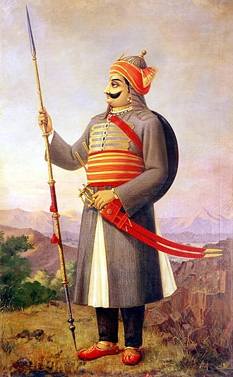

Mahrana Pratap
Maharana Pratap, the crowned ruler of Mewar, was born in 1540 and died on January 19, 1597. The Mewar ruler was regarded as one of the bravest Rajput warriors and was well-known for his memorable fights against the Mughals. Known by his people as Mewari Rana, he passed away as a hero for his people. Even though centuries have been passed since his death, Rajasthan still honours the Mewar ruler as a hero for all of his bravery, sacrifice, and determination.
The emperor Rana Udai Singh’s son and heir was Maharana Pratap. Following his father’s death in 1572, senior courtiers believed Pratap was the perfect candidate for king and that his exceptional qualities would enable them to deal with the situation they were facing with Mughals at the time. In 1572, Maharana Pratap took over his father’s throne and ruled Mewar. Unlike the previous Rajput emperors, Maharana Pratap resisted the vast Mughal army that came before him, fighting bravely till his very last breath, according to the Cultural India study. He represents Rajput bravery, devotion, and chivalry to both his people and the next generation. Maharana Pratap was married to eleven women, had five daughters, and seventeen sons. He tied the knot for the first time in 1557 with Maharani Ajabde Punwar. His eldest son’s name was Amar Singh I, who later succeeded him and became the ruler of Mewar.
Famous battle fought by him
The Battle of Haldighati: India’s history is filled with legendary wars that tell inspiring tales of bravery and selflessness. These wars are still highly significant in modern India because the people occasionally debate about them and use them as examples of bravery and fearlessness. One such war is the battle of Haldighati, which had a lasting impact on Rajasthani culture. Maharana Pratap Singh and an army of the Mughals under the command of Raja Man Singh of Jaipur engaged in combat in June of 1576. Akbar, the Mughal emperor, made an attempt to defeat Rajasthan’s remaining autonomous leaders.Even though Mughal were victorious, the battle is famous for heroic Rajput resistance against heavy odds.There has been a controversy about who won the battle of Haldighati. According to the Indian Express report in 2017, BJP MLA Mohan Lal Gupta had proposed rewriting of the history curriculum in Rajasthan university to portray Maharana Pratap as the winner of the 1576 battle. Authoritative texts on mediaeval history, such as Satish Chandra’s Medieval India: From Sultanat to the Mughals- Mughal Empire (1526-1748), say the Battle of Haldighati was failed to break the stalemate between Akbar and Rana Pratap, with the latter retreating into the hills of southern Mewar. However, the Minister Kalicharan Saraf says Akbar was only a foreign invader, and that Rana Pratap actually won the battle. Meanwhile, Historian Tanuja Kothiyal, who specialises in the history of mediaeval Rajasthan, believes altering historical facts such as the result of the Battle of Haldighati “not only insults history but the education process as a whole”.
To honour Maharana Pratap’s valour and boldness, a historical site has been established. A Maharana Pratap memorial is situated at the top of Udaipur’s Moti Magri, Pearl Hill. The life-size bronze statue of the valiant warrior mounted on his horse is displayed, which was constructed by Maharana Bhagwat Singh Mewar. 
Military Career of Maharana Pratap
Battle of Haldighati
Mughal Emperor Akbar wanted to stabilise his Empire by capturing the regional kingdoms, including the Rajputana region.
- Almost all the Rajput rulers submitted to Akbar, but it was Maharana Pratap who refused to bend the knee and posed a fierce challenge to the mighty Mughal empire.
- As a result of the failure of all diplomatic efforts to persuade Maharana Pratap, the battle was the only way left to decide the fate of Mewar.
- The famous battle between Maharana Pratap and Akbar's Army led by Raja Man Singh-1 of Amer at Haldighati took place on 18 June 1576.
- The battle was fought in a narrow mountain pass near Gogunda, the makeshift capital of Mewar in Rajasthan.
- After a fierce struggle, eventually, the Mughals emerged victorious but were unable to capture Maharana Pratap or any important family member of the Sisodiya dynasty. Therefore, the victory at the Battle of Haldighati was almost fruitless. Maharana Pratap recaptured the Western region of his Empire soon after the battle.
Reconquest of Mewar
After the Battle of Haldighati, the territories of Mewar were largely controlled by the Mughals. However, the circumstances changed around 1580, which resulted in the revival of Mewar.
In 1579, there were rebellions in Bengal and Bihar, and Mirza Hakim invaded Punjab, which relieved some pressure from Mewar due to the Mughals being occupied elsewhere. As a result of increased rebellions in the Punjab and Bengal regions of the Mughal Empire, military resources were diverted to these unstable regions.
Akbar then sent Abdul Rahim Khan-i-Khanan to attack Mewar, but he stopped at Ajmer and didn't proceed further.
In 1582, Pratap Singh, the ruler of Mewar, attacked and captured the Mughal post at Dewair in the Battle of Dewair. As a result, all 36 Mughal military outposts in Mewar were automatically removed.
Akbar tried again in 1584, sending Jagannath Kachhwaha to invade Mewar. However, the Mewar army defeated the Mughals once more, forcing them to retreat.
After this, Akbar moved to Lahore and remained there for twelve years, keeping an eye on the situation in the northwest. During this time, no major Mughal expedition was sent to Mewar.
Taking advantage of this period, Pratap Singh managed to recover most of Mewar, except its former capital, Chittorgarh, and Mandalgarh regions, by defeating the Mughal forces in those areas. He also established a new capital called Chavand, near modern Dungarpur.
To learn about the Bhakti Movement, click here!
Siege of Chittorgarh
During his military career, Maharana Pratap faced the infamous Siege of Chittorgarh. The fort of Chittorgarh was under the control of Maharana Pratap. It was surrounded and besieged by the forces of the Mughal emperor Akbar. The siege lasted for several months. During this, the defenders of Chittorgarh valiantly resisted the enemy's attacks. Despite facing hardships and scarcity of resources, Maharana Pratap and his forces displayed unwavering courage and determination in defending their fort.
Battle of Dewair
The Battle of Dewair was a significant conflict in Maharana Pratap's military career. It took place between the forces of Maharana Pratap and the Mughal army led by Man Singh I. Maharana Pratap and his troops engaged in fierce combat with the Mughals. Maharana Pratap's strategic maneuvers allowed them to hold their ground and inflict heavy losses on the enemy. The Battle of Dewair showcased Maharana Pratap's military prowess. It also showed his commitment to defending his kingdom.
Battle of Gogunda
The Battle of Gogunda was a crucial confrontation in Maharana Pratap's military journey. It occurred between the forces of Maharana Pratap and the combined armies of the Mughals and the ruler of Mewar, Raja Udai Singh. In this battle, Maharana Pratap demonstrated his tactical skills and leadership abilities. Despite facing internal conflicts and betrayal, Maharana Pratap's forces fought bravely. They pushed back the enemy and secured victory. The Battle of Gogunda highlighted Maharana Pratap's resilience and determination to protect his kingdom.
Battle of Rakhtalai
The Battle of Rakhtalai was a notable engagement in Maharana Pratap's military career. It took place between the forces of Maharana Pratap and the Mughal army led by Asaf Khan. In this battle, Maharana Pratap's troops fought fiercely against the Mughals. Despite being outnumbered, they inflicted heavy casualties on the enemy and emerged victorious.
Maharana Pratap- Administration, Culture, Art, Literature, Religious
-
The administration, culture, and other aspects of Mewar under Maharana Pratap were influenced by the contemporary Rajputana structure.
Administration
Maharana Pratap was an able administrator. This is evident from the fact that even in the face of constant attacks and hostilities from the Mughals, he maintained smooth administration and also shifted his capital to Kumbhalgarh and later Chavand but never let the administrative structure fall apart. Moreover, his able military administration led to the success in the battle of Dewar/ Dewair in 1582 and, later on, the capture of 36 Mughal military outposts in the Mewar region.
Art, Culture, and Literature
After Maharana Pratap made Chavand his capital, he patronised many writers and artisans. This led to the development of the Chavand School of Art.
Religion
Maharana Pratap was a practising Hindu, and he stood alone against the Mughals to safeguard Hindu pride and Rajput Honor. A large majority of the population of Mewar was also Hindu.